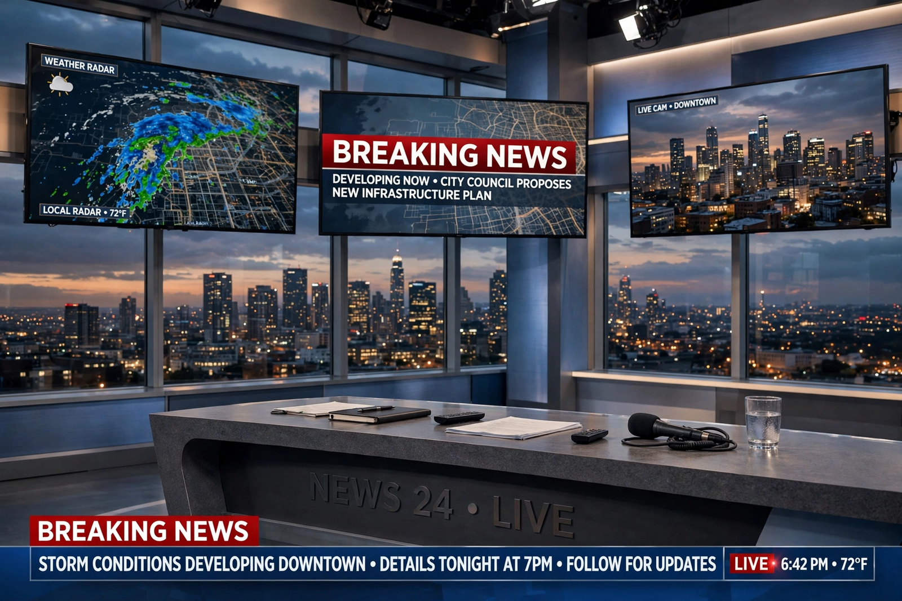

Top stories
Top US and world headlines

CNN's homepage is built around a large lead story with a red breaking-news treatment when a major story is developing, surrounded by the latest US politics, world news and video — recreated here in general form.
Politics: Washington latest
Coverage of the White House, Congress and elections.
World news and live updates
Live updates pages are a hallmark of CNN digital coverage.
Markets and business
Stocks, the economy and technology business news.
Health and wellness
Medical research and public health reporting.